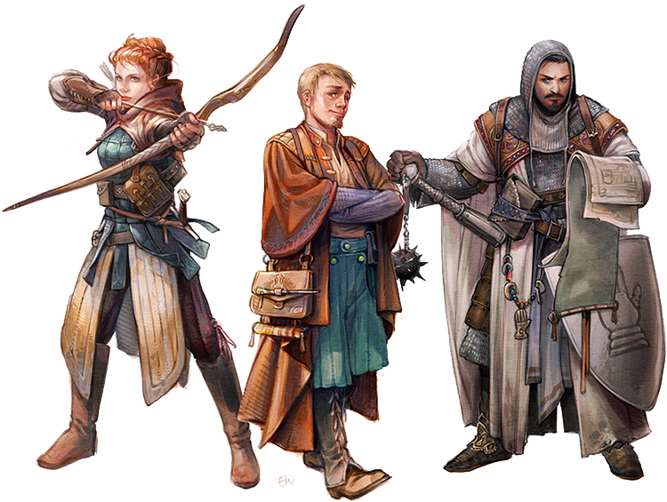
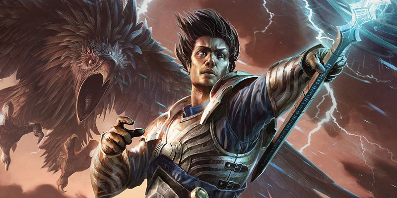

Modifier les classes
Parfois une campagne peut avoir besoin d'archétypes ou d'options de personnage qui ne figurent pas dans le matériel officiel existant. Si vous êtes dans cette situation, vous serez alors peut-être tenté de modifier une ou plusieurs des classes du jeu afin de pouvoir répondre à vos joueurs à la recherche d'une touche unique pour les capacités de leurs personnages. Toutefois, la modification d'une classe n'est pas quelque chose qui doit être pris à la légère, car ce travail exige un sérieux effort et pas mal de tests si l'on veut que le résultat tienne la route. Les deux meilleures façons de modifier une classe sont en fait d'échanger certaines capacités d'une classe à une autre, ou d'en ajouter de nouvelles à une classe existante. Cet article présente des méthodes pour vous aider à utiliser la mécanique existante comme modèle, tout en s'appuyant sur les capacités d'autres classes comme inspiration.
Créer des nouvelles options de classe
Chaque classe contient au moins un point de décision important, appelée ici une option de classe. Les clercs choisissent un domaine divin, les guerriers un archétype martial, les roublards un archétype de roublard, les magiciens une tradition arcanique, et ainsi de suite. Si vous voulez créer une version différente de l'un de ces points de décision important (comme une nouvelle voie primitive pour le barbare), examinez les exemples existants pour voir comment ils sont construits. Comme pour tout dans la conception de classe, soyez prêt à tester la jouabilité de vos idées et à y apporter des modifications si les choses ne tournent pas de la façon que vous le souhaitez.
La première chose à faire lors de la création d'une nouvelle option de classe est de comprendre ce que représente cette option unique, à la fois en terme d'histoire sous-jacente de la classe et de place de l'option dans le monde de la campagne. Comprendre l'histoire derrière l'option de classe, et quels types de personnages vous souhaitez permettre à vos joueurs de créer avec elle, est l'étape la plus critique du processus, car elle va servir d'exemple pour vous guider.
Une fois que vous avez à l'esprit un concept unique pour votre option de classe, il est temps de passer au processus de conception. Jetez un œil aux options existantes de la classe et voyez ce qu'elles fournissent, puis utilisez-les comme exemples ou blocs de construction pour les caractéristiques que votre option de classe fournira. Il est tout à fait possible que deux options de classe d'une même classe partagent certaines mécaniques, et tout aussi opportun d'examiner la mécanique d'autres classes pour y puiser de l'inspiration. A chaque étape de ce long chemin, vous pouvez comparer ce que vous concevez avec votre concept original et, si la conception vous aide à définir et à mettre en place ce concept, vous savez que vous êtes sur la bonne voie. A l'inverse, si la conception d'une mécanique ne contribue pas à renforcer le thème de votre nouvelle option de classe, il se pourrait bien que vous devriez reconsidérer sa mécanique.
Lorsque vous considérez les capacités de classe à inclure dans votre nouvelle option de classe, répondrez aux questions suivantes :
- Quels types de capacités les autres options de cette classe fournissent-elles à des niveaux comparables ?
- Les capacités améliorent-elles directement la capacité de combat d'un personnage, rendent-elles le personnage meilleur pour l'exploration ou l'interaction, ou fournissent-elles des alternatives qui ne sont pas liées à une augmentation brute de puissance ?
- Comment à un niveau donné les caractéristiques renforcent-elles l'histoire de cette option de classe ?
- Existe-t-il déjà une mécanique qui fait quelque chose que la nouvelle option de classe doit également faire ?

Guide pour des classes spécifiques
Comme dit dans le Guide du Maître, il n'existe pas de formule magique pour concevoir parfaitement une nouvelle capacité de classe, mais quelques lignes directrices s'appliquent pour chacune des onze classes. Si bien ces conseils sont loin d'être exhaustifs, ils devraient tout de même vous faire considérer quelques points et également vous faire réfléchir sur la façon dont les capacités d'une classe devraient travailler ensemble.
Souvent, comme vous le verrez, le meilleur conseil est de laisser les choses comme elles sont. De nombreuses classes ont des qualités profondément ancrées, comme la façon dont elles apprennent et lancent des sorts, qui ne se prêtent pas du tout facilement à être améliorées. Mais il existe tout de même de très nombreuses possibilités pour développer des variantes de capacités au sein de chaque classe.
Barbare
- Bien que la capacité de classe de Rage du barbare accorde une augmentation significative de la force défensive de la classe, soyez conscient de la façon dont les autres capacités de classe interagissent avec la Rage pour renforcer la puissance offensive du personnage. Par exemple, le principal inconvénient de l'Attaque téméraire est largement compensé par la résistance aux dommages qu'octroie la Rage, et la capacité de berserker Frénésie donne au barbare une forte puissance d'attaque pendant au moins un combat.
- Notez que le Déplacement rapide sert trois objectifs importants : faire parvenir rapidement le barbare en première ligne d'une bataille, empêcher la rage du barbare de prendre fin parce qu'un ennemi n'est plus à proximité, et encourager le barbare à ne pas porter d'armure lourde.
- Les capacités de niveau 10 des deux vois primitives parlent plus au pilier de l'interaction qu'à celui du combat ; méfiez-vous de les remplacer ou de les modifier pour ajouter de la puissance au combat.
- Le bénéfice de niveau 6 de la voie du guerrier totem parle généralement au pilier d'exploration du jeu, réfléchissez donc à deux fois avant de le changer, pour la même raison que ci-dessus.
Barde
- La progression de lanceur de sorts des bardes est complète ; toute modification de la capacité Lancer des sorts aura un grand impact sur la classe.
- Les bardes connaissent un nombre limité de sorts, ce qui est une restriction à leur polyvalence qui devrait être modifiée avec soin lors de changements à la classe. Les bardes du collège du Savoir ont une expansion de nombre de sorts connus en tant que capacité de classe entière.
- La source d'inspiration, acquise au niveau 5, contribue à encourager le barde à continuer sur le chemin de la classe pendant au moins cinq autres niveaux afin de faire un meilleur usage de l'inspiration bardique. Méfiez-vous de développer une mécanique similaire pour les autres classes, car une capacité qui permet une véritable augmentation à un résultat numérique (au lieu d'un avantage ou d'un désavantage) devrait être rare.
Clerc
- La progression de lanceur de sorts des clercs est complète ; toute modification de la capacité Lancer des sorts aura un grand impact sur la classe.
- Un domaine de clerc possède une capacité de classe forte et déterminante qui affecte fondamentalement la façon dont ce personnage joue. La capacité de niveau 1 d'un domaine, que vous créiez ou modifiez ce domaine, doit être quelque chose qui distingue réellement les clercs de ce domaine.
- Les sorts de domaine ont généralement été choisis pour étendre les options du clerc, la liste de sorts de base du clerc ayant été maintenue relativement courte. Regardez les listes de sorts d'autres classes lorsque vous cherchez des sorts à ajouter à un nouveau domaine. Par exemple, le domaine de Lumière propose un certain nombre de sorts qui ne sont pas sur la liste des clercs.
Druide
- La progression de lanceur de sorts des druides est complète ; toute modification de la capacité Lancer des sorts aura un grand impact sur la classe.
- La Forme sauvage est utilisée en grande partie pour des fins d'exploration par les druides du cercle de la terre. Pour les druides du cercle de la lune, la Forme sauvage offre des avantages défensifs importants, ce qui rend ces personnages très résistants.
- Comme pour les sorts de domaine des clercs, les sorts des druides du cercle de la terre sont souvent tirés de la liste de sorts d'autres classes pour augmenter la polyvalence de ces personnages.
Ensorceleur
- La progression de lanceur de sorts des ensorceleurs est complète ; toute modification de la capacité Lancer des sorts aura un grand impact sur la classe.
- Comme les bardes, les ensorceleurs ont une limitation du nombre de sorts qu'ils peuvent choisir, ce qui est une restriction importante de la classe.
- Un ensorceleur n'a pas beaucoup de choix de métamagie. Lorsque vous créez une nouvelle option de métamagie, assurez-vous qu'elle soit suffisamment utile pour justifier qu'un ensorceleur utilise un de ses précieux choix pour elle.
- Les Points de sorcellerie et l'Incantation flexible [Flexible Casting] ont intentionnellement été conçus de sorte qu'un ensorceleur qui ne ferait que convertir des emplacements de sorts en des points de sorcellerie pour lancer des sorts de niveaux supérieurs le fasse au prix du coût final. Soyez prudent lors de la modification de cet équilibre.
Guerrier
- Les guerriers acquièrent la plupart de leurs prouesses au combat de trois caractéristiques de la classe : être capable de faire jusqu'à quatre attaques par round, utiliser Fougue pour effectuer de rapides et puissantes rafales de combat, avoir le plus grand nombre de capacités d'amélioration de caractéristiques ce qui leur permet de renforcer leurs attaques et leurs jets de sauvegarde (ou, si le MD le permet, de sélectionner des dons).
- Les archétypes de guerrier sont en grande partie destinés à donner différentes saveurs à la classe de base, et dans lesquelles on retrouve la plupart de la force de combat du guerrier. Le champion gagne une certaine polyvalence et une meilleure chance de réaliser des coups critiques. Le maître de guerre se spécialise dans des manœuvres qui ne sont pas disponibles pour d'autres guerriers. La capacité de lancer des sorts du chevalier occulte met cet archétype à part, tout en restant suffisamment limitée pour que le personnage se sente toujours comme un guerrier.
- Notez que les capacités de niveau 7 du champion et du maître de guerre penchent fortement sur les piliers de l'exploration et de l'interaction, alors que le chevalier occulte gagne des sorts qui contribuent à la compétence du guerrier dans les domaines de l'exploration et de l'interaction, donc sa capacité de niveau 7 vise à mélanger les sorts et les attaques.
Magicien
- La progression de lanceur de sorts des magiciens est complète ; toute modification de la capacité Lancer des sorts aura un grand impact sur la classe.
- Les magiciens ont la plus longue liste de sorts et la plus large sélection de sorts à choisir chaque jour, grâce à leurs grimoires. Tout ce qui augmente encore leur polyvalence à cet égard devrait être abordé avec prudence.
- Les traditions arcaniques servent trois objectifs, que vous devriez considérer lors de la création de nouvelles : encourager l'utilisation de certains types de sorts, fournir des utilitaires uniques à des spécialistes d'un genre particulier de magie et qui ne peuvent être trouvés dans des sorts, et modifier subtilement le style de jeu du magicien sans éloigner fondamentalement la classe de sa base qui est de lancer des sorts.
Moine
- Le moine est l'une des classes les plus complexes, avec le plus grand nombre de capacités uniques de classe. Méfiez-vous de remplacer une capacité par plus d'une autre nouvelle, car la classe en a déjà beaucoup.
- La capacité Arts martiaux du moine a été rédigée avec soin pour éviter des combinaisons imprévues. C'est pourquoi elle ne traite pas les attaques à mains nues comme une arme de finesse, car cela pourrait avoir des conséquences imprévues avec de futures règles sur les armes de finesse qui seraient appropriées pour, disons, une rapière ou une dague, mais pas pour le combat à mains nues.
- Les points de ki ont quelques lignes directrices subtiles dans la façon dont ils sont dépensés. Les capacités qui coûtent 1 point de ki se concentrent généralement sur l'utilitaire, ou sont équivalentes à un coup à mains nues. Celles qui coûtent 2 points de ki devraient être équivalentes à un sort de niveau 1, tandis qu'une capacité qui coûte 3 points de ki devrait être équivalente à un sort de niveau 2. Examinez les disciplines élémentaires de la voie des quatre éléments du moine pour d'autres exemples de comment faire correspondre les points de ki à des niveaux de sorts.
Occultiste
- Les occultistes ont une méthode pour lancer des sorts qui est unique, et ils comptent sur la possibilité de lancer un petit nombre de sorts mais plus fréquemment. Rappelez-vous qu'un occultiste augmente automatiquement le niveau d'emplacement de sort des sorts qu'il jette, ce qui signifie que même des sorts de bas niveau gagnent en puissance lorsqu'ils sont lancés par un occultiste.
- La liste de sorts des occultistes a été soigneusement étudiée pour notamment éviter des sorts qui pourraient devenir ennuyeux s'ils étaient lancés trop souvent à la table. Si vous souhaitez accorder à un occultiste l'accès à un nouveau sort, mais que vous craignez que son lancement fréquent ne perturbe le jeu, envisagez la création d'une manifestation occulte qui permette l'utilisation de la même magie mais sur une base plus limitée (en exigeant un repos entre les utilisations par exemple).
- Les occultistes tirent beaucoup de leur puissance de combat du sort mineur eldritch blast, et ont déjà beaucoup de manifestations à choisir pour augmenter cette confiance. Méfiez-vous de créer de nouvelles manifestations qui rendraient eldritch blast encore plus puissant.
Paladin
- La progression de lanceur de sorts des paladins est réduite et correspond à la moitié de la progression complète. La capacité de Lancer des sorts peut être un peu bricolée, mais devrait rester une partie importante de ce que la classe peut faire.
- Les paladins tirent une grande part de leur puissance de combat de la capacité de classe de Châtiment divin. Le paladin pouvant attendre de voir si une attaque est réussie (ou est un coup critique) avant de l'utiliser, le personnage est capable de réaliser d'énormes dommages. Méfiez-vous de bricoler cette capacité, car elle est fondamentale pour la force de combat du paladin.
- Beaucoup de capacités de classe du paladin sont de nature défensive, protégeant à la fois le paladin et ses alliés contre le mal. Échanger certaines capacités de classe défensives pour les offensives commence à modifier l'essence du paladin, et peut-être d'une manière que vous ne soupçonnez pas.
Rôdeur
- La progression de lanceur de sorts des rôdeurs est réduite et correspond à la moitié de la progression complète. La capacité de Lancer des sorts peut être un peu bricolée, mais devrait rester une partie importante de ce que la classe peut faire.
- Une grande partie de la puissance des rôdeurs lors d'un combat vient de sorts tels que marque de chasseur et des capacités de classe accordées par les archétypes de rôdeurs. La capacité de niveau 3 de chaque archétype prévoit généralement soit une augmentation brute de la puissance de combat, soit d'accorder une plus grande polyvalence au combat.
- L'Ennemi juré a intentionnellement été conçu pour ne fournir aucun bonus de combat, parce que la force du rôdeur en combat ne doit pas compter uniquement sur la discrétion du MD ou les circonstances de l'aventure. Bien que la capacité de niveau 3 de l'archétype du chasseur repose un peu sur la nature des ennemis qui sont combattus, Ennemi juré est généralement utile pour les piliers de l'interaction et de l'exploration.
Roublard
- Les roublards reposent principalement sur deux capacités, tant pour la sensation de la classe que pour sa force au combat : l'Attaque sournoise et la Ruse. Ce sont des fondamentales pour le roublard, ainsi que l'Esquive instinctive au niveau 5 qui est presque de la même importance pour cette. Laissez ces capacités telles quelles, sauf si vous avez une vraie raison pour changer quoi que ce soit.
- Les capacités de classe accordées par les archétypes de roublard au niveau 3 devraient fondamentalement modifier la façon dont la classe se joue, comme les domaines divins pour les clercs.
- Les roublards sont les maîtres des compétences, et la classe pousse déjà les limites de ce que nous (et nos testeurs) considérons comme acceptable en termes d'équilibre de jeu. Leur donner encore plus de compétences pourrait déséquilibrer les roublards.
Exemple : rôdeur sans sort
Comme exemple de ce que ce processus de remplacement de capacité de classe pourrait être, nous allons supprimer la possibilité de lancer des sorts de la classe de rôdeur. Disons que dans votre campagne vous voulez que les rôdeurs soient un peu plus proche du Seigneur des Anneaux, et moins ouvertement magique dès le départ.
La capacité de Lancer des sorts a un impact important sur la classe de rôdeur, donc ce n'est pas un petit projet. Commencez par évaluer à quoi contribue cette capacité. En général, les rôdeurs ont une liste de sorts limitée (et ne connaissent qu'un nombre relativement faible de sorts), et fonctionnent sur la même progression à demi-vitesse que le paladin. Si vous regardez les sorts de rôdeur, vous pourriez parvenir aux conclusions suivantes :
- Les rôdeurs ont beaucoup d'utilitaires pour l'exploration dans leurs sorts, ayant accès à de la magie comme détection du poison et de la maladie, sens animal et invocation d'animaux.
- Les rôdeurs obtiennent beaucoup de leur puissance au combat par des sorts, en particulier marque du chasseur.
- Les rôdeurs obtiennent une certaine capacité de soin et de restauration grâce à des sorts comme soins, restauration partielle et protection contre le poison qui évitent à un aventurier certains préjudices dont il pourrait souffrir lors d'une exploration en pleine nature.
- Les rôdeurs obtiennent certains effets de contrôle en combat grâce à des sorts tels que ensnaring strike, croissance d'épines et conjure barrage, qui donnent tous un avantage magique au rôdeur dans un combat.
- À certains niveaux un rôdeur gagne l'accès à de nouveaux niveaux de sorts, et c'est la seule capacité de classe qu'il reçoit. En conséquence, il devra obtenir d'autres capacités de classe à ces niveaux pour qu'il n'ait pas que des points de vie supplémentaires à ces niveaux.
Compte tenu de l'utilité du sort soins et du besoin accru de guérison aux niveaux inférieurs, nous allons créer une capacité de classe de guérison qui permet au rôdeur de créer et d'appliquer des cataplasmes à base de plantes, une amélioration qui va de pair avec le fait de boire une potion au début, puis qui va évoluer au fur et à mesure que le rôdeur gagne des niveaux.
En outre, comme le rôdeur aura surement besoin de certains utilitaires de combat que les sorts lui offrent normalement, ajoutons une version de la capacité de classe Supériorité au combat tirée du guerrier maître de guerre. Les manœuvres qu’octroie Supériorité au combat peuvent donner un bon coup de pouce au combat, en particulier en matière de contrôle du champ de bataille. En regardant la classe de guerrier, nous pouvons voir que la Supériorité au combat du guerrier maître de guerre est située dans un espace similaire à la progression de lanceur de sorts de l'Eldritch Knight. Comme nous ne voulons pas que le rôdeur éclipse le guerrier maître de guerre, nous allons faire commencer le rôdeur avec moins de manœuvres, et intensifier le tout lors des passages de niveaux. Puisque nous allons remplacer une progression réduite de lanceur de sorts, cela signifie que nous aurons besoin de quelques autres capacités pour qu'il reste à la hauteur.
Aux niveaux 9 et 13 se trouvent des espaces où nous pouvons placer certaines mécaniques axées sur l'exploration. Modélisons le premier sur le sort protection contre le poison et donnons également à la capacité de Cataplasme un effet amélioré. Pour le second nous pouvons nous baser sur le sort invocation d'animaux, qui peut être utile à la fois dans les scènes d'exploration et dans les scènes de combat.
Au niveau 17 se trouve un autre espace, que nous pouvons remplir avec une amélioration sur la Supériorité de combat. Heureusement, le maître de guerre possède une capacité de classe qui cadrerait bien avec le concept de ce rôdeur, donc nous pouvons échanger la capacité Implacable pour nous assurer que le rôdeur garde toujours au moins certaines capacités à exercer pour contrôler le champ de bataille, même en fin de journée d'une aventure.
Enfin, nous devons considérer l'impact de ces changements sur les autres capacités de classe, et faire les ajustements nécessaires. Par exemple, l'archétype maître des bêtes du rôdeur a une capacité au niveau 15 de Partage de sorts qui ne sert plus à rien sans celle de Lancer de sorts. Si votre rôdeur sans sort décide de jouer un maître des bêtes, vous aurez donc aussi besoin de créer une capacité de remplacement pour Partage de sorts, peut-être quelque chose pour aider à garder en vie le compagnon animal du rôdeur plus longtemps. En outre, comme la capacité Sens primitifs nécessite que le rôdeur dépense des emplacements de sorts pour activer la capacité, nous pouvons la modifier pour permettre au rôdeur de l'utiliser une fois et de retrouver son emploi après avoir terminé un repos court ou long.
Voici donc la description complète des nouvelles capacités classe pour notre rôdeur sans sort :
Supériorité au combat
Au niveau 2, vous apprenez des manœuvres qui sont alimentés par des dés spéciaux appelés dés de supériorité.
Manœuvres. Vous apprenez deux manœuvres de votre choix, à choisir dans la liste des manœuvres disponibles aux guerriers de l'archétype maître de guerre. De nombreuses manœuvres améliorent l'attaque d'une manière ou d'une autre. Vous ne pouvez utiliser qu'une seule manœuvre par attaque. Vous apprenez une manœuvre supplémentaire de votre choix aux niveaux 5, 9, 13 et 17. Chaque fois que vous apprenez une nouvelle manœuvre, vous pouvez également remplacer une (et une seule) manœuvre que vous connaissez déjà par une autre.
Dés de supériorité. Vous disposez de quatre dés de supériorité, qui sont des d8. Un dé de supériorité est dépensé lorsque vous l'utilisez. Vous retrouvez tous vos dés de supériorité dépensés lorsque vous terminez un repos court ou long. Vous gagnez un autre dé de supériorité au niveau 9 et encore un autre au niveau 17.
Jets de sauvegarde. Certaines de vos manœuvres exigent que votre cible réalise un jet de sauvegarde pour résister aux effets de la manœuvre. Le DD du jet de sauvegarde est calculé comme suit :
DD des jets de sauvegarde de manœuvre = 8 + votre bonus de maîtrise + votre modificateur de Force ou de Dextérité (selon votre choix)
Cataplasmes
Au niveau 3, vous pouvez créer des cataplasmes spéciaux qui ont un pouvoir de guérison comparable à certaines potions. Vous pouvez passer 1 heure à collecter des herbes et préparer des cataplasmes au moyen de bandages traités pour créer un nombre de cataplasmes égal à votre modificateur de Sagesse (minimum 1). Vous pouvez à un moment donné porter un nombre de cataplasmes égal à votre modificateur de Sagesse (minimum 1). Vous seul pouvez appliquer les cataplasmes que vous créez. Après 24 heures, tous les cataplasmes que vous n'avez pas utilisés perdent leur bénéfice.
Si vous passez 1 minute à appliquer un de vos cataplasmes à une créature humanoïde blessée, dépensant ainsi son utilisation, cette créature retrouve 1d6 points de vie tous les deux niveaux de rôdeur vous avez (arrondi au supérieur).
Anti venin naturel
À partir du niveau 9, vous avez un avantage aux jets de sauvegarde contre le poison et la résistance aux dégâts de poison. En outre, vous pouvez utiliser un de vos cataplasmes pour soigner un effet de poison sur une créature, en plus de restaurer ses points de vie.
Appel d'alliés de la nature
À partir du niveau 13, quand vous êtes dans une zone de votre terrain favori, vous pouvez appeler des créatures naturelles de ce terrain pour qu'elles se battent à vos côtés, en utilisant votre lien au monde naturel pour les convaincre de vous aider. Le MD choisit les bêtes appropriées en fonction du terrain et parmi celles qui pourraient vous entendre dans un rayon de 1,5 kilomètre autour de vous, dans l'un des groupes suivants :
- Une bête de CR 2 ou inférieur
- Deux bêtes de CR 1 ou inférieur
- Quatre bêtes de CR 1/2 ou inférieur
- Huit bêtes de CR 1/4 ou inférieur
Ces bêtes s'approchent de vous depuis leur emplacement actuel, et se battront à vos côtés, attaquant les créatures qui vous sont hostiles. Elles sont amicales vis-à-vis de vous et de vos compagnons, et vous lancez l'initiative des créatures appelées en tant que groupe qui prend ses propres tours. Le MD possède les statistiques des créatures.
Après 1 heure, ces bêtes retournent à leur emplacement précédent. Une fois que vous utilisez cette fonction, vous ne pouvez pas l'utiliser à nouveau dans la même zone pendant 24 heures, car les mêmes animaux ne répondront pas plusieurs fois à votre appel.
Implacable
À partir du niveau 17, lorsque vous lancez l'initiative et qu'il ne vous reste plus de dés de supériorité, vous récupérez 1 dé de supériorité.
Et vous pouvez considérer la capacité suivante pour remplacer Partage de sorts :
Coordination bestiale
À partir du niveau 15, quand un attaquant que vous pouvez voir touche votre compagnon animal avec une attaque, vous pouvez avertir ce dernier. Si votre compagnon animal peut vous entendre, il peut utiliser sa réaction pour réduire de moitié les dégâts de l'attaque contre lui.
Exemple : élu divin
Comme exemple reflétant comment la création d'une nouvelle option de classe peut fonctionner, examinons une conception qui était une classe à part entière dans le supplément Codex Divin de la troisième édition : l'élu divin. Cela pourrait être un archétype attrayant si vous pratiquez un jeu où les dieux ont un grand impact sur le monde, et où les élus de ces dieux (individus réceptacles d'un fragment de la puissance divine d'un dieu) sont des acteurs importants dans la campagne. Pour tenir compte de ce ton, nous allons faire de l'élu divin une nouvelle origine magique pour la classe d'ensorceleur. Cette décision reflète l'idée que le personnage est quelqu'un qui a fondamentalement été changé suite à un contact avec sa divinité, éveillant en lui de puissants pouvoirs magiques.
En regardant les origines magiques d'ensorceleur existantes, nous pouvons déterminer que, au niveau 1, une origine fournit non seulement l'explication de la source de la puissance de l'ensorceleur, mais aussi une description sur la façon dont ce personnage se joue. Puisque cet ensorceleur a acquis sa magie en étant imprégné d'un pouvoir divin, nous décidons de donner à l'élu divin accès à certains sorts qu'obtient normalement un clerc. Chaque fois que nous augmentons la palette de sorts connus par les ensorceleurs, nous courons le risque d'éclipser les autres origines magiques, puisque la limitation du nombre de sorts connus par un ensorceleur a un grand impact sur la façon dont la classe se joue. Cela indique que l'autre caractéristique de classe ne devrait pas disposer de lien étroit avec les capacités de lanceur de sorts de l'ensorceleur, car cet aspect de l'ensorceleur reçoit déjà un vrai coup de pouce. Puisque la classe d'élu divin était un peu plus martiale dans son incarnation précédente, nous décidons de donner à notre ensorceleur une meilleure armure et l'accès aux armes courantes, semblables aux bonus défensifs obtenus par les ensorceleurs de la Lignée draconique au niveau 1.
Au niveau 6, les autres origines magiques offrent des capacités qui ont un impact sur les capacités de combat du personnage. En regardant la classe de barde, nous pouvons voir que le Collège de la Vaillance offre la capacité Attaque supplémentaire au même niveau, et nous décidons de l'attribuer à l'élu divin pour améliorer encore sa tendance martiale.
Au niveau 14, les origines magiques offrent dans une certaine mesure de l'utilitaire, avec peu d'impacts directs sur le lancer de sorts ou les capacités de combat. Ici, nous choisissons de refléter le lien de l'élu divin en nous basant sur la capacité de la Lignée draconique du même niveau, reflétant le contact du divin avec une certaine imagerie qui y est généralement associé : les ailes.
Au niveau 18, les origines magiques offrent des capacités qui sont à la fois puissantes et fortement liées au thème central de l'origine. Puisque l'ensorceleur aura accès à des sorts de niveau supérieur à ce stade, et que la capacité que nous lui avons donné au niveau 1 d'avoir accès à certains sorts de clerc n'aura plus autant d'impact, nous avons décidé de lier cette capacité de classe aux sorts de clerc, à la fois pour inciter l'utilisation continue de ces sorts, et pour donner à l'élu divin un peu plus de résilience face à des menaces de haut niveau.
Lorsque nous en avons eu fini avec cette conception initiale, voici ce à quoi l'origine magique d'ensorceleur Élu divin ressemble :
Élu des dieux
Au niveau 1, vous choisissez l'un des domaines divins de la classe de clerc. Vous ajoutez les sorts de ce domaine pour les clercs de niveau 1 à vos sorts connus. Ces sorts ne comptent pas dans le nombre de sorts que vous pouvez connaitre, et ils sont considérés comme des sorts d'ensorceleur pour vous. Lorsque vous atteignez les niveaux 3, 5, 7 et 9 dans la classe d'ensorceleur, vous apprenez également les sorts de votre domaine qui deviennent disponibles à ces niveaux.
Bonus de maîtrise
Au niveau 1, vous gagnez la maîtrise des armures légères, des armures intermédiaires, des boucliers et des armes courantes.
Attaque supplémentaire
À partir du niveau 6, vous pouvez attaquer deux fois, au lieu d'une, chaque fois que vous prenez l'action Attaquer à votre tour.
Ailes divines
Au niveau 14, vous gagnez la capacité de faire pousser dans votre dos une paire d'ailes (de plumes ou de chauve-souris, au choix). Vous disposez alors d'une vitesse de vol égale à votre vitesse de marche actuel. Vous pouvez créer ces ailes en tant qu'action bonus à votre tour. Elles persistent jusqu'à ce que vous les fassiez disparaître en tant qu'action bonus à votre tour. Vous ne pouvez pas faire apparaître vos ailes tout en portant une armure, sauf si l'armure est faite pour les accueillir, et les vêtements qui ne sont pas fait pour accueillir vos ailes pourraient être détruits lors de leur apparition.
Puissance de l'élu
À partir du niveau 18, lorsque vous lancez l'un des sorts que vous avez appris de votre capacité de classe Élu des dieux, vous regagnez un nombre de points de vie égal à votre modificateur de Charisme (minimum +1) + le niveau du sort.
En fin de compte, les capacités de notre ensorceleur Élu divin sont assez proches de celles de la classe de lanceur de sorts spontané Élu divin d'autrefois !

Écrit par Mike Mearls, traduit par blueace et Garruth